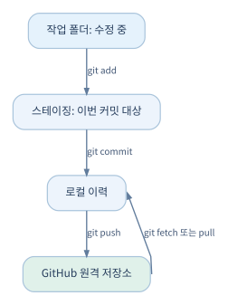

01. Git의 기본 원리#
1.1 Git은 무엇을 관리하는가?#
Git은 파일의 변화를 커밋(commit)이라는 단위로 기록하는 분산 버전 관리 프로그램이다. GitHub 계정이 없어도 로컬에서 Git을 쓸 수 있다. 반대로 GitHub 웹 페이지에 저장소가 있다는 사실만으로 로컬 컴퓨터가 자동으로 동기화되지는 않는다. git push나 Desktop의 Push origin처럼 변경을 보내는 동작이 필요하다.
UVCS에서 체크인한 경험이 있다면 ‘변경 집합을 기록한다’는 감각은 비슷하다. 다만 Git은 로컬 저장소에 먼저 커밋하고, 그 이력을 원격 저장소로 push하는 작업이 분리된다.

- Working Directory: 지금 편집하는 파일이 있는 작업 폴더. Unity Editor가
Assets를 수정하는 영역이다. - Staging Area/Index: 다음 커밋에 포함할 변경을 선택해 놓는 영역.
git add는 업로드가 아니라 이 준비 작업이다. - Local Repository:
.git폴더에 기록된 커밋 이력. 인터넷 없이도 커밋 가능하다. - Remote Repository: GitHub 같은 서버에 놓인 저장소.
origin은 보통 기본 원격 저장소의 별칭이다. - Commit: 특정 시점의 파일 상태와 부모 커밋, 작성자 등의 정보를 갖는 불변에 가까운 이력 객체.
- HEAD: 현재 체크아웃해 작업하는 커밋·브랜치를 가리키는 참조.
커밋은 백업과 같지 않다 로컬 커밋만 있으면 디스크 손실 시 함께 사라질 수 있다. 원격 푸시와 저장소 별도 백업을 조합해야 한다.
git push만으로도 모든 종류의 손실·삭제를 예방하는 것은 아니다.
1.2 시작 준비와 사용자 설정#
Windows에서 Git 공식 배포를 설치하고 PowerShell, Git Bash 또는 VS Code 터미널을 열어 확인한다.
git --version
git config --global user.name "Your Display Name"
git config --global user.email "you@example.com"
git config --global --list
user.name과 user.email은 커밋 작성자 정보다. GitHub 웹 인증과 다르다. 이메일 공개가 부담되면 GitHub의 noreply 주소를 사용할 수 있다. 팀 전체에서 개별 사용자 계정을 사용하는 것이 추적성 면에서 좋다.
처음 실습: 작은 C# 파일 이력 만들기#
mkdir git-practice
cd git-practice
git init
echo "public class Health {}" > Health.cs
git status
git add Health.cs
git commit -m "Add health component skeleton"
git log --oneline --decorate -5
Git 기본 브랜치 이름은 환경 설정에 따라 다를 수 있다. 통일이 필요하면 git branch -M main으로 이름을 바꾼다. git status는 작업 전후에 자주 보는 습관을 들이자.
1.3 핵심 명령과 정확한 의미#
| 명령 | 의미 | Unity 예 |
|---|---|---|
git status |
수정·추가·충돌·스테이징 확인 | .meta 누락 검사 |
git diff |
아직 스테이징하지 않은 변경 비교 | C# 코드 수정 검토 |
git diff --staged |
커밋 예정 변경 비교 | 예상치 못한 씬 포함 여부 검사 |
git add Assets/Scripts/Player.cs |
특정 경로를 스테이징 | 기능과 무관한 장면 수정 제외 |
git commit -m "..." |
로컬 변경 집합 기록 | 구현 단위 이력 생성 |
git log --oneline --graph --all |
이력 확인 | 브랜치가 어디서 갈라졌는지 이해 |
git clone URL |
원격 저장소 복제 | 새 팀원 초기 설정 |
git fetch origin |
원격 이력만 가져옴 | 병합 전 변경 확인 |
git pull |
가져온 내용을 현재 작업에 통합 | 다른 팀원의 최신 코드 반영 |
git push -u origin main |
로컬 브랜치를 원격에 게시 | 첫 업로드 |
git switch -c feature/dodge |
새 브랜치 생성·전환 | 회피 기능 분리 |
git merge feature/dodge |
다른 브랜치 이력을 통합 | 기능 통합 |
fetch는 비교적 안전한 조회 중심 작업이며, pull은 통합까지 수행한다. 로컬에 커밋되지 않은 수정이 있을 때는 먼저 status를 확인하고, 의도적으로 커밋하거나 임시 보관한 뒤 가져오자.
1.4 브랜치와 병합의 사고방식#
브랜치는 무거운 복제 폴더가 아니라 특정 커밋을 가리키는 가벼운 포인터다. main에서 기능 브랜치를 만들면 두 브랜치가 같은 출발점을 공유하다 각자 커밋이 생기면서 갈라진다.
git switch main
git switch -c feature/player-dodge
# PlayerDodge.cs를 수정한 뒤
git add Assets/Scripts/PlayerDodge.cs
git commit -m "Implement dodge state transitions"
git switch main
git merge feature/player-dodge
실제 팀 작업에서는 main에 직접 merge하기보다는 GitHub Pull Request를 통해 리뷰한 후 병합하는 방식을 권장한다(05장).
충돌이 발생하면#
두 브랜치에서 같은 텍스트의 동일한 부분을 바꾸면 Git이 자동으로 선택하지 못할 수 있다. git status로 충돌 파일을 확인한 뒤, 텍스트의 <<<<<<<, =======, >>>>>>> 표시를 읽고 의도한 최종 내용으로 정리한 다음 git add하여 병합을 완료한다. Unity 씬·프리팹 파일은 텍스트처럼 보이더라도 구조화된 직렬화 데이터이므로 표시만 지우는 식의 해결은 위험하다. 04장에서 별도로 다룬다.
1.5 실수 복구: 파일·커밋·브랜치#
| 상황 | 우선 사용할 방법 | 주의 |
|---|---|---|
| 파일 수정만 취소 | git restore -- 파일경로 |
저장되지 않은 수정이 사라짐 |
| 스테이징만 취소 | git restore --staged -- 파일경로 |
작업 파일 내용은 유지 |
| 안전한 되돌림 이력 | git revert 커밋해시 |
이전 변경을 취소하는 새 커밋 생성 |
| 임시 작업 보관 | git stash push -u -m "메시지" |
적용 후 충돌 발생 가능 |
| 임시 작업 복원 | git stash list, git stash pop |
pop은 성공 시 stash 제거 |
| 과거 이력 탐색 | git reflog |
로컬 기록의 보존에는 기간 제한 존재 |
git reset --hard, git clean -fd, push --force는 데이터 손실이나 팀원의 이력 훼손을 일으킬 수 있다. 단순히 '되돌리기'라는 설명만 보고 실행하지 말고, 어느 영역(작업 폴더·스테이징·커밋·원격)이 바뀌는지 이해한 뒤 사용하자. 공유된 main의 잘못된 변경은 대체로 revert가 낫다.
1.6 GitHub Desktop과 터미널을 병행하는 법#
GitHub Desktop의 Changes → Commit to ... → Push origin은 각각 변경 선택, 로컬 커밋, 원격 업로드에 해당한다. Fetch origin은 원격 이력을 확인하고 Pull origin은 변경을 로컬에 가져오는 역할을 한다. Desktop은 입문에 편하지만 세밀한 복구, LFS 조사, CI 관련 작업에는 CLI가 유용하다.
터미널과 Desktop은 같은 .git 저장소를 조작하므로 서로 독립된 변경 이력이 생기는 것이 아니다. 어느 화면에서 작업하든 현재 브랜치와 미커밋 변경을 확인하자.
1.7 작은 실습: 변경과 복구#
Health.cs에MaxHealth필드를 추가하고git diff를 살펴본다.git add와git commit으로 기능 이력을 기록한다.- 다른 브랜치에서 값을 바꿔 커밋한다.
main에서 통합하고 두 이력을git log --graph --oneline --all로 확인한다.- 안전한 실습용 파일을 한 번 수정하고
git restore로 되돌려 본다. - 커밋한 변경을
git revert로 되돌려 새 커밋이 생기는 것을 확인한다.
확인할 결과: 어떤 변경이 로컬에만 있고 어떤 변경이 원격으로 전송되었는지, 실수를 되돌릴 때 데이터가 어디서 사라지는지 설명할 수 있어야 한다.
공식 자료: Git Book, Git 참조, GitHub 시작하기